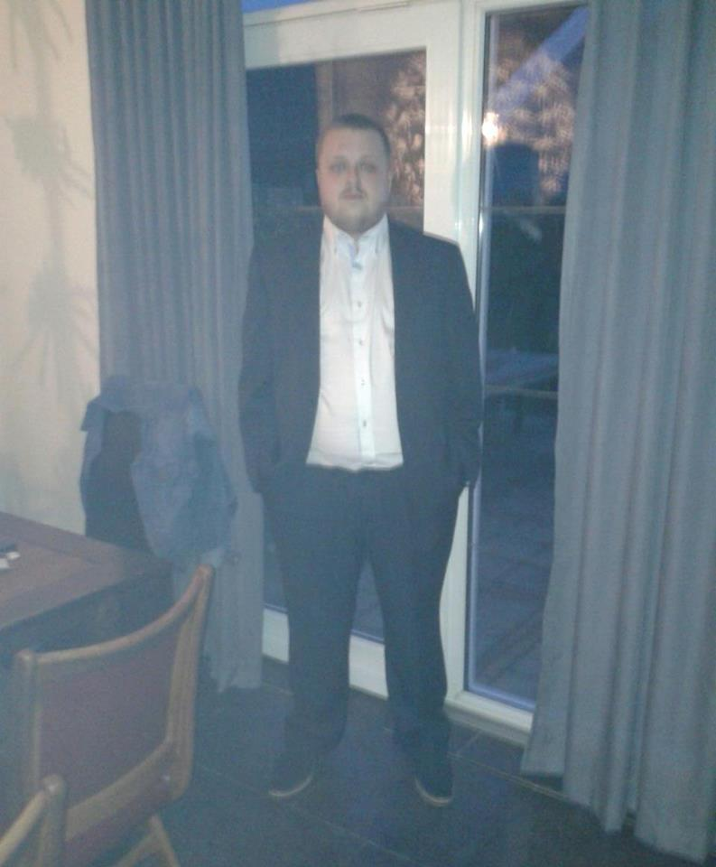

 Mijn naam is Kevin, 35 jaar oud en wonende te Beilen, Drenthe. Heb een afgeronde ICT opleiding en mijn werk/denkniveau is HBO/WO. ICT is waar mijn ambitie en passie liggen en waar ik het beste tot mijn recht kom. Daarnaast ben ik sociaal, behulpzaam, leergierig en kan ik ook uitstekend zelfstandig of samen met anderen werken. Ik zoek een functie tot webdesigner waar ook de mogelijkheid geboden wordt om door te groeien. Mijn ambitie en doel is om meerdere opmaak- en programmeertalen te beheersen, door het volgen van cursussen en daardoor uiteindelijk door te groeien tot een full-stack developer.